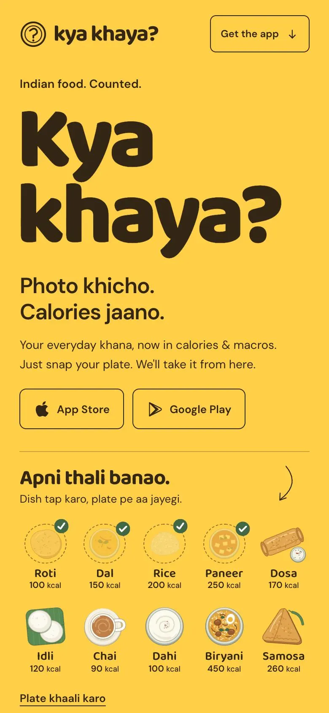
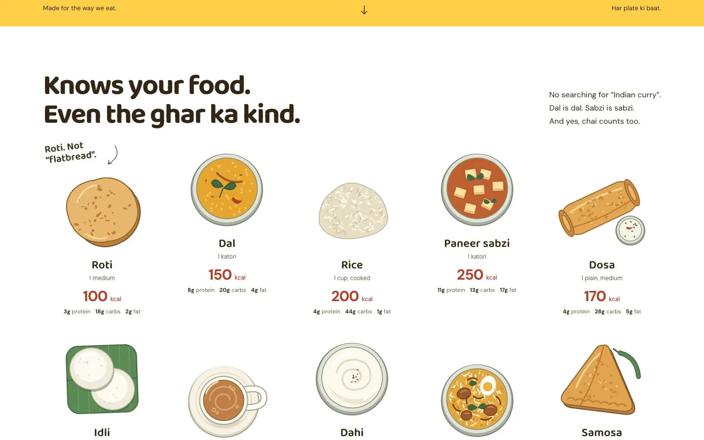

Kya Khaya?
Indian food. Counted.
Landing page for a calorie app that reads a photo of an Indian plate and returns calories and macros. It speaks Hinglish and is aimed at people who eat roti and dal rather than packaged Western food.
Visit kyakhaya.com
Design decisions
- Full-bleed saffron yellow background (#FFCF48) with dark brown text (#342615), so the whole page reads as one warm colour field.
- Headline 'Kya khaya?' is set huge in Baloo 2 (about 137px), with DM Sans for body copy; the rounded type matches the friendly Hinglish voice.
- A tilted phone mockup shows the app mid-scan, with kcal labels pinned to each dish and a protein, carbs and fat split under the total.
- 'Apni thali banao' plate builder on the right: ten illustrated dishes with kcal under each. Tapping one puts it on the phone's plate and the total and macros update live.
- Hand-drawn style dish illustrations and a curled arrow pointing at the builder; the store buttons are plain outlined buttons that stay quiet next to the hero.
On a phone

Kya Khaya? has a single theme, so there is one set of captures.
The flow, step by step


Further down the page
